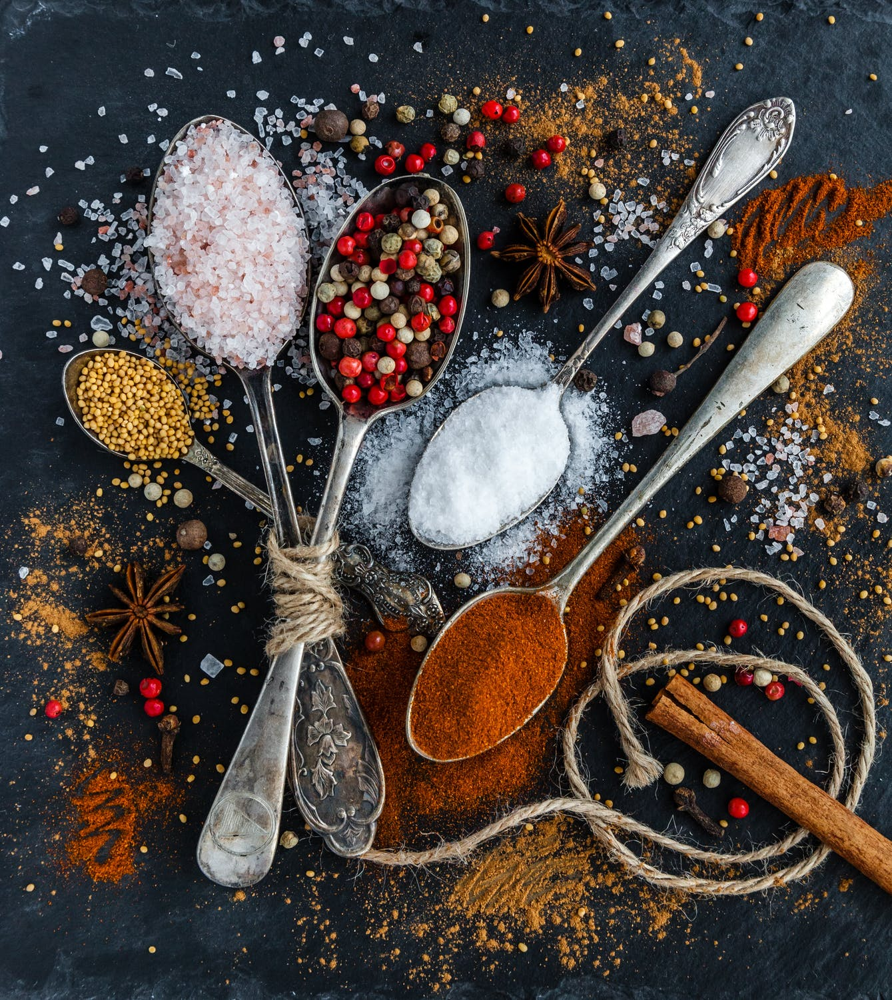

Baking Mad is the trusted destination for bakers of all levels to learn, be inspired, and share their enthusiasm for baking with those they love. Home to the best recipes, content, tips and tools; we bring baking to life in everything we do, so you can do the same in your own home. We want to create, educate and inspire you to become the best baker you can be, so we never show you a cake without helping you make it, reveal a product without a recipe, or recommend anything that doesn’t make you and your baking better.
We work everyday from 9am to 9pm.
Address: Kazakhstan, Almaty city, Sultan Beibarys 12